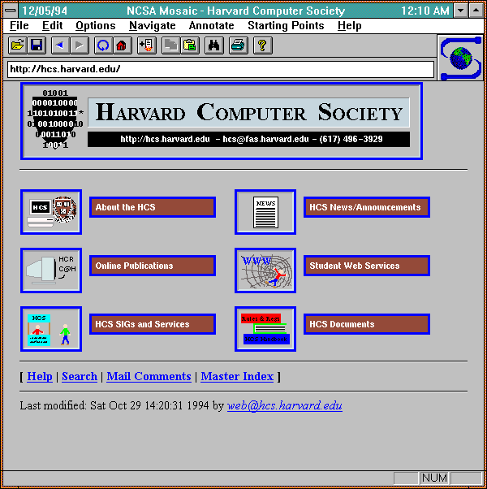

Internet betyder nätverk av nätverk. Internet är världens största datornätverk och ett system för enkel och effektiv kommunikation av text, ljud och bild. World Wide Web (dvs webbsidor), e-post och fildelning är populära användningsområden för Internet.
Föregångaren till Internet, ARPANET, skapades av USA:s militära forskningsanstalt Advanced Research Projects Agency, ARPA. I slutet av 1980-talet skapades HTML och HTTP, standarderna för att beskriva och överföra webbsidor.
Under senare delen av 1990-talet ökade antalet Internetanvändare markant. Sedan den tiden har de flesta företag och många privatpersoner en egen webbplats (ibland kallat hemsida), och e-postadress.
World Wide Web (engelska världsomspännande nät), www, webben eller nätet är ett hypertextsystem som används på Internet.
Även om det tekniskt sett bara är ett av många användningsområden för Internet, är WWW:s genomslag så totalt att "Internet" och "WWW" ofta används synonymt. Webben kombinerar en stor mängd avancerade tekniker till något som närmast är trivialt enkelt att använda.World Wide Web används med en webbläsare som klientprogram.
På 1990-talet dominerade Netscape, men när Microsoft utvecklade sin webbläsare Internet Explorer till en grundkomponent i sitt operativsystem Microsoft Windows tog den över den större delen av webbläsarmarknaden och utvecklades därför snabbt till den mest använda. På 2000-talet blev andra alternativ populära, som Firefox och Opera och nu på senare år Chrome.
Inom Mac-familjen används främst läsaren Safari.
WWW kommer ifrån ett projekt på CERN. Dess uppfinnare är engelsmannen Tim Berners-Lee, som skapade World Wide Web år 1989. Den första webbplatsen skapades den 6 augusti 1991. Den första grafiska webbläsaren var Mosaic.
Bild på webbläsaren Mosaic
Hypertext Transfer Protocol är det kommunikationsprotokoll som används för att överföra webbsidor på informationsnätverket WWW, World Wide Web på Internet. Det ursprungliga syftet med HTTP var att tillhandahålla en metod för att överföra HTML-sidor från webbservrar till webbklienter.
Hyper Text Markup Language är ett format där dokumentets struktur och logik bestäms av skaparen, medan läsaren styr hur texten kommer att presenteras. Numera är det dock vanligt att skaparen själv styr presentationen av dokumentet med så kallade stilmallar, CSS. Tillägg programmerade i skriptspråk (exempelvis JavaScript) används ibland för att skapa dynamiska och interaktiva webbplatser. Denna webbsida och de flesta andra är helt eller delvis skrivna i detta märkspråk. I de flesta webbläsare kan man se källkoden till webbsidan som visas genom att gå till "Visa" i huvudmenyn och sedan "Källa" eller "Källkod". Olika webbläsare tolkar HTML-kod på olika sätt och detta har varit ett problem gällande för världens webbutvecklare. En gemensam standard har vuxit fram genom World Wide Web Consortium(W3C). Genom att följa denna standard ökar chansen att webbsidan ser likadan ut i standardmedvetna webbläsare.
Då ser startkoden för ett HTML5-dokument ut på följande sätt:
<!DOCTYPE html>
<html lang="sv">
<head>
<meta charset="utf-8" />
<title>Grundkod för HTML5</title>
</head>
<body>
</body>
</html>
Lista över vanligt förekommande taggar(märkord):
a, används för att skapa hyperlänkar
br, skapar en radbrytning
h1 h2, h3, h4, h5, h6, huvudrubrik och ner till sjätte nivån av underrubriker
img, infogar en bild i dokumentet
p, märker upp ett textstycke
strong och em, markerar olika sorters betoning
hr, skapar en horisontell linje
Bra länkar
ol oc ul, skapar en sorterad respektive osorterad lista
Cascading Style Sheets (på svenska stilmall) är ett språk som beskriver presentationsstilen för ett strukturerat dokument som till exempel typsnitt, textstorlek och färg. Tekniken är ett sätt att anpassa dokumentet med hänsyn till datortyp, skärmupplösning, färgdjup och installerade typsnitt.
CSS - (Cascading Style Sheets) är stilmallar som vi använder för att ge design till webbsidor när det gäller färg, textutseende, bilder, länkar mm. En enda CSS-mall kan styra många olika webbsidor och det är då enkelt att ändra designen på alla sidor genom att ändra i en CSS-mall. CSS gör det möjligt att skapa vissa formateringar och effekter som inte fanns i HTML. En av fördelarna med CSS är att flera mallar kan användas och de har då olika prioritet inbördes så att en "huvudmall" med de övergripande formateringarna kan ersättas på en lägre nivå av en "lokal mall" som då gäller med högre prioritet före huvudmallen. All design/formatering bör ske i externa stilmallar. Man bör sträva mot att separera innehöll och struktur i sina webbsidor. Det gör att mängden kod i själva webbsidan minskar avsevärt och sidorna laddas snabbare i webbläsaren. Då samma stilmall används för flera webbsidor behöver inte webbläsaren lösa in stilmallen på nytt varje gång en ny webbsida anropas.
CSS finns specificerat i olika "nivåer": CSS1 (1996) innehåller information om relativt enkel formatering som bakgrundsfärger, bakgrundsbilder, teckensnitt och justering av text. CSS2 går ett steg längre och ger möjlighet att formge hela dokument med positionerade rektangulära områden (boxar) som tidigare bara varit möjligt med tabeller (tables). CSS3 ger ökat stöd för att hitta element på webbsidan som matchar vissa mönster, fler färger.
©Skapat av
Viggo Skjonsberg
2022-09-19